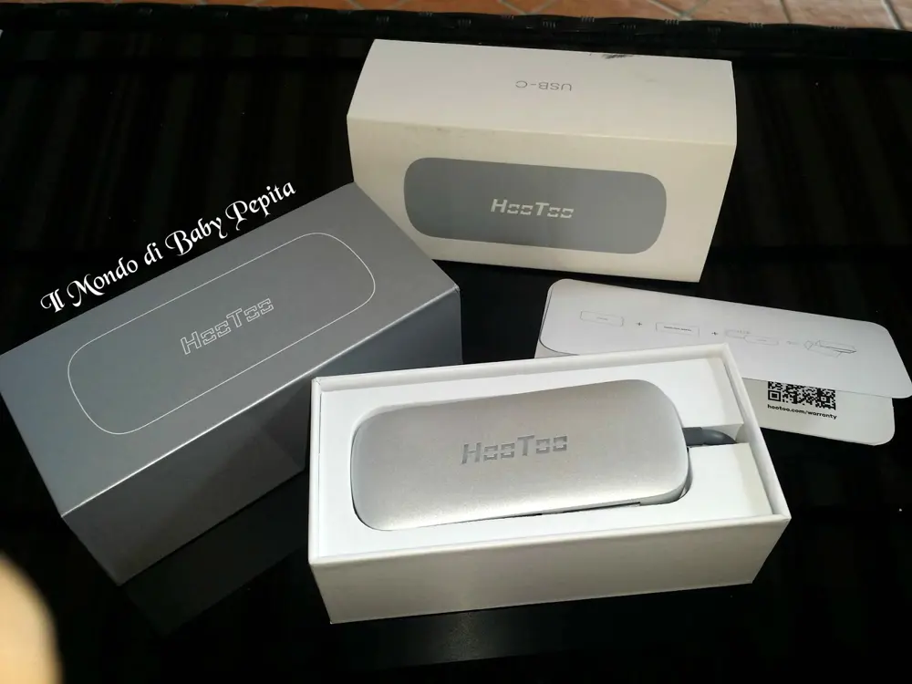
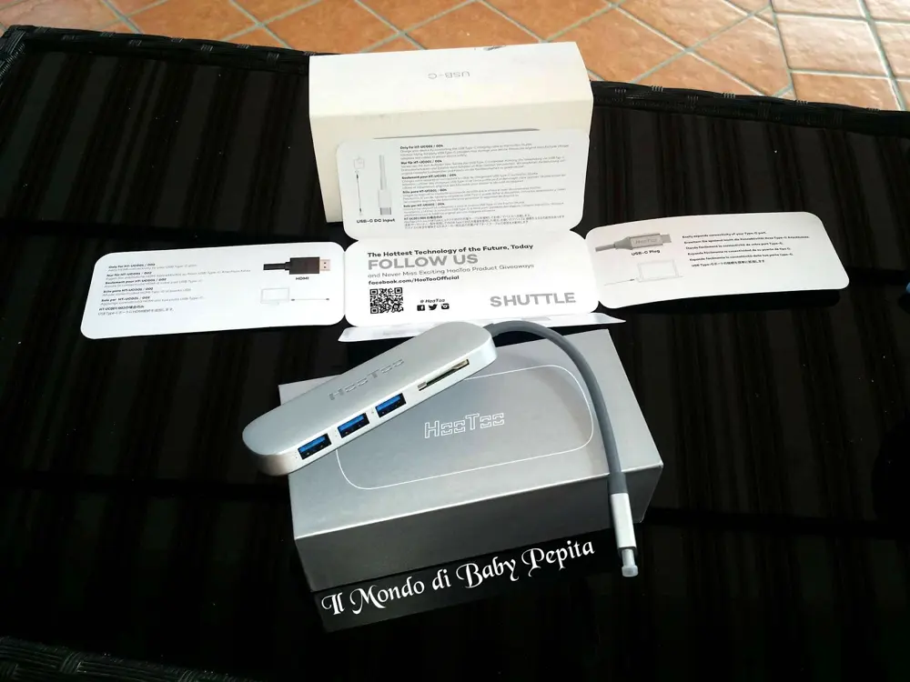
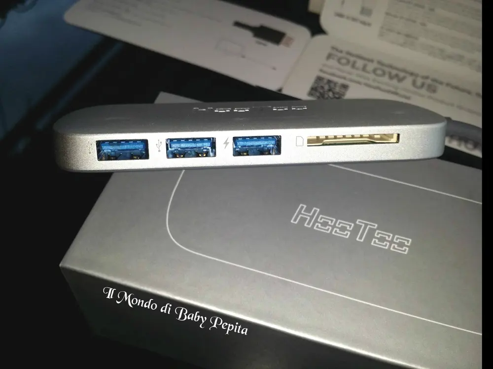
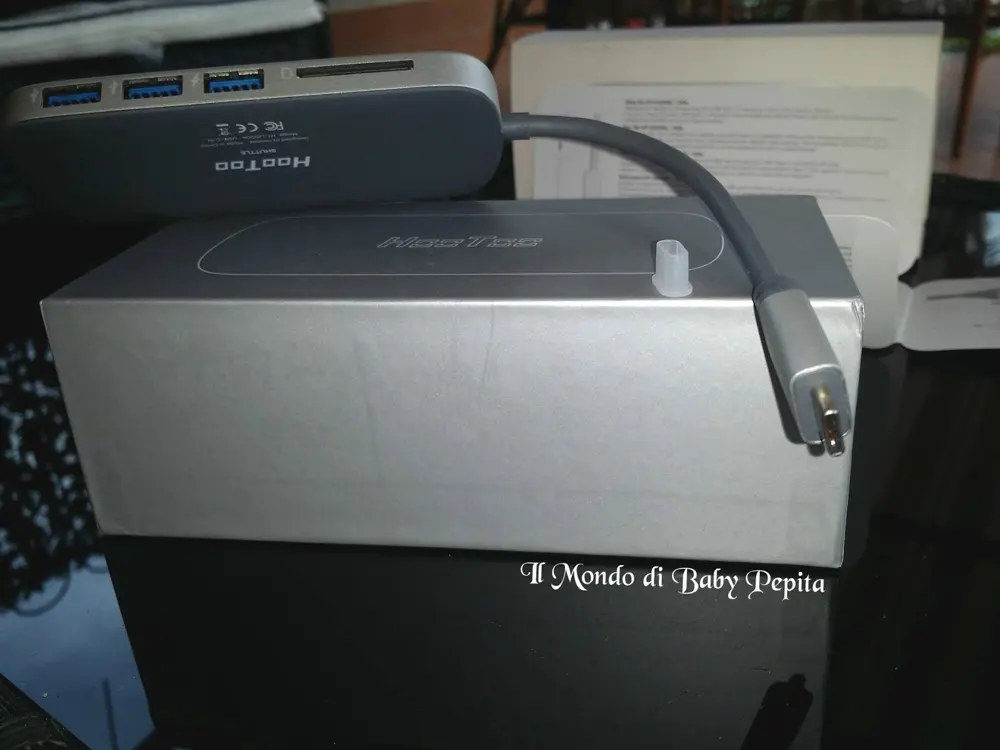
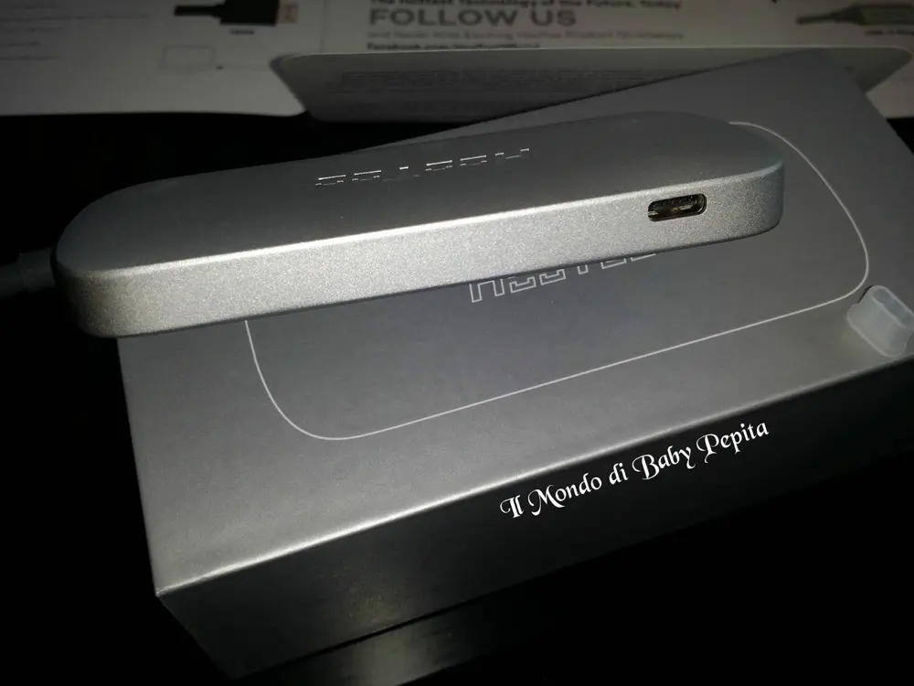
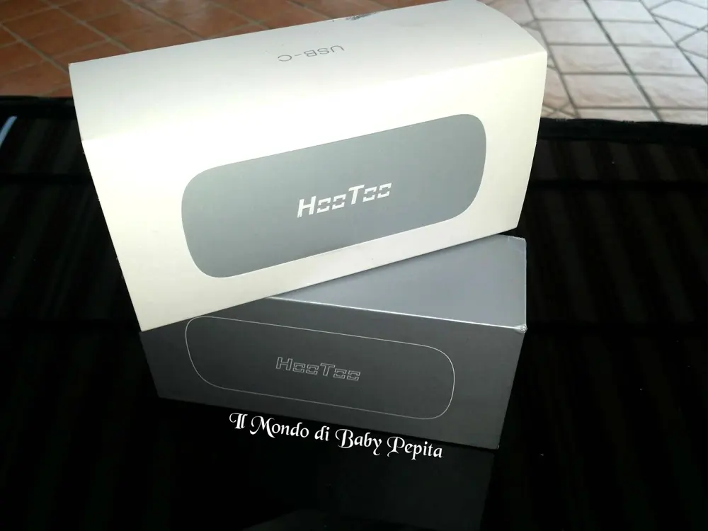

SunvalleyTek-IT - Espansione Istantanea: USB 3.1, Lettore SD Card , e carica USB Tipo C

Tornati dalle ferie estive, io in realtà sono sempre stata a casa ahahahahvi parlo di un accessorio adatto anche per questo rientro dalle vacanze. . di cosa si tratta?
di cosa si tratta?

Il venditore SunvalleyTek-IT mi ha gentilmente omaggiato di un un USB 3 in 1Chissà quante foto e quanti video avete fatto in questi giorni di divertimento per immortalare momenti bellissimi, ed ora?

Ora per non perdere tutto c'è bisogno di trasferire tutto sul vostro pc o laptop. Ecco quello che fa per voi.Connette all'istante diverse periferiche alla volta al tuo nuovo MacBook o laptop Tipo C grazie all'Hub HooToo Shuttle Tipo C. Questo Hub ultra sottile USB 3.1 Gen 1 in perfetto stile Mac ti permette di collegare fino a 3 flash drives USB ed effettuare lettura e scrittura da ogni SD card, tutto mentre carichi il tuo laptop.
Inoltre carica il tuo laptop direttamente dalla porta di ricarica Tipo C, consentendoti di avere una connessione extra senza perdere batteria. Le porte USB 3.0 permettono di connettere tastiere, mouse, chiavette USB e dischi rigidi esterni al tuo computer portatile con una velocità di trasferimento dati fino a 5 Gbps. Estrai la scheda SD direttamente dalla tua macchina fotografica e trasferisci tutte le tue foto sul tuo nuovo MacBook in appena qualche secondo.

E poi c'è una chicca: sul retro c'è una presa per l'alimentatore in modo da avere il collegamento con l'hub e la ricarica, il tutto in contemporanea (abbiamo quindi una connessione in più e al tempo stesso ci ricarichiamo).
Mi sento di consigliare questo prodotto per diversi motivi, intanto per il design e la facilità al trasporto e inoltre per la qualità del prodotto stesso.Il prezzo lo trovo ottimo in rapporto alla qualità.
Inoltre nella scatola del prodotto si trova l'estensione di garanzia per 6 mesi con un totale di 18 mesi di garanzia.
Prezzo: 35,99 € Insomma ideale per chi possiede un MacBook o laptop.
Per acquistarlo: https://www.amazon.it/dp/B01D2Q2RW2?keywords=Hub+Usb+CPer quanto riguarda me SEGUITEMI SU:FACEBOOKINSTAGRAMTWITTER